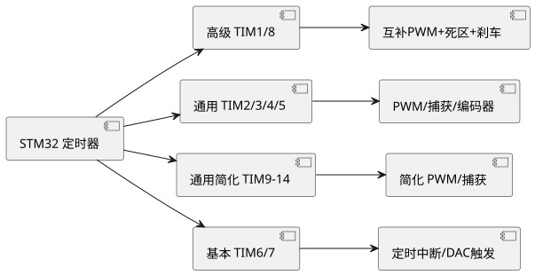

第 17 章 定时器与 PWM
学习目标
- 了解 STM32 定时器分类（高级/通用/基本）与各自特点
- 掌握时基单元（PSC/ARR/CNT）与三种计数模式
- 能够编写基本定时器定时中断代码
- 掌握通用定时器 PWM 输出与频率/占空比计算公式
- 了解输入捕获测频原理与编码器接口模式
- 掌握 HAL_TIM 库函数与回调机制
17.1 STM32 定时器分类
STM32F407 共有 17 个定时器，按功能复杂度分为三类：
| 类别 | 定时器 | 位数 | 主要功能 |
|---|---|---|---|
| 高级定时器 | TIM1、TIM8 | 16 | PWM 互补输出、死区、刹车、重复计数 |
| 通用定时器 | TIM2/TIM5 | 32 | PWM、输入捕获、输出比较、编码器 |
| 通用定时器 | TIM3/TIM4 | 16 | PWM、输入捕获、输出比较、编码器 |
| 通用定时器 | TIM9-TIM14 | 16 | 简化 PWM、输入捕获（部分无编码器） |
| 基本定时器 | TIM6、TIM7 | 16 | 定时中断、DAC 触发（无 GPIO） |
高级定时器专为电机控制设计，可输出三相互补 PWM 带死区与刹车保护；通用定时器功能最全，是日常 PWM/输入捕获/编码器的主力；基本定时器最简单，仅用于定时中断或触发 DAC/ADC。所有定时器都挂在 APB1（84 MHz）或 APB2（168 MHz）总线上，若 APB1 预分频≠1，定时器时钟自动 ×2。

查看 PlantUML 源码
@startuml
skinparam defaultFontName "Microsoft YaHei"
skinparam backgroundColor #ffffff
left to right direction
component "STM32 定时器" as A
component "高级 TIM1/8" as B
component "通用 TIM2/3/4/5" as C
component "通用简化 TIM9-14" as D
component "基本 TIM6/7" as E
component "互补PWM+死区+刹车" as B1
component "PWM/捕获/编码器" as C1
component "简化 PWM/捕获" as D1
component "定时中断/DAC触发" as E1
A --> B
A --> C
A --> D
A --> E
B --> B1
C --> C1
D --> D1
E --> E1
@enduml17.2 时基单元与计数模式
每个定时器的核心是时基单元，由三个 16/32 位寄存器构成：
- PSC（Prescaler，预分频器）：将定时器输入时钟分频，写入 PSC 后实际分频系数为 PSC+1。
- ARR（Auto-Reload Register，自动重装载寄存器）：计数上限，CNT 计到 ARR 后产生更新事件。
- CNT（Counter，计数器）：当前计数值，每来一个分频后时钟脉冲加 1 或减 1。
三种计数模式：
- 向上计数：CNT 从 0 递增到 ARR，再回 0 产生更新事件。最常用。
- 向下计数：CNT 从 ARR 递减到 0，重装 ARR 产生更新事件。
- 中心对齐：CNT 从 0 升到 ARR-1，再从 ARR 降到 1，循环。PWM 频率加倍且为对称波形，适合电机控制。
更新事件的频率即定时器溢出频率，公式为：
$$f_{update} = \frac{f_{TIM}}{(PSC+1) \cdot (ARR+1)}$$
其中 $f_{TIM}$ 为定时器输入时钟频率（如 TIM6 挂在 APB1 上，APB1=84 MHz，倍频后 $f_{TIM}=84$ MHz）。例如要 1 秒中断一次：取 PSC=8399（分频 8400，得 10 kHz）、ARR=9999，则 $f_{update}=84000000/(8400 \times 10000)=1$ Hz。
17.3 基本定时器定时中断
下例使用 TIM6 实现 1 秒定时中断，每次中断翻转 LED：
/* CubeMX 配置：TIM6 Prescaler=8399, Counter Period=9999,
启用 NVIC → TIM6 global interrupt */
/* USER CODE BEGIN 2 */
HAL_TIM_Base_Start_IT(&htim6); /* 启动定时器并使能更新中断 */
/* USER CODE END 2 */
/* USER CODE BEGIN 4 */
void HAL_TIM_PeriodElapsedCallback(TIM_HandleTypeDef *htim)
{
if (htim->Instance == TIM6) {
HAL_GPIO_TogglePin(GPIOA, GPIO_PIN_6); /* 1 秒翻转 LED */
}
}
/* USER CODE END 4 */
HAL_TIM_Base_Start_IT 内部完成使能更新中断、启动计数器；中断触发后 ISR 调用 HAL_TIM_PeriodElapsedCallback，由用户重写。注意若多个定时器同时使用，回调内需通过 htim->Instance 区分。
17.4 通用定时器 PWM 输出
PWM（Pulse Width Modulation，脉冲宽度调制）通过改变占空比（Duty Cycle）控制平均电压，常用于调光、调速、D/A 输出。STM32 每个 PWM 通道由 CCR（捕获/比较寄存器）控制占空比，CNT 与 CCR 比较产生输出电平翻转。PWM 频率公式：
$$f_{PWM} = \frac{f_{TIM}}{(PSC+1) \cdot (ARR+1)}$$
占空比：
$$D = \frac{CCR}{ARR+1} \times 100\%$$
下例使用 TIM3 CH1（PA6）输出 1 kHz、初始占空比 30% 的 PWM，并实现呼吸灯：
/* CubeMX 配置：TIM3 Channel1 → PWM Generation CH1
Prescaler=83, Counter Period=999, Pulse=300
则 f_PWM = 84MHz/(84*1000) = 1kHz，占空比 300/1000=30% */
/* USER CODE BEGIN 2 */
HAL_TIM_PWM_Start(&htim3, TIM_CHANNEL_1); /* 启动 PWM */
/* USER CODE END 2 */
/* USER CODE BEGIN WHILE */
uint8_t duty = 0;
int8_t step = 5;
while (1)
{
__HAL_TIM_SET_COMPARE(&htim3, TIM_CHANNEL_1, duty); /* 修改 CCR */
HAL_Delay(30);
duty += step;
if (duty >= 100 || duty == 0) step = -step; /* 呼吸反转 */
/* USER CODE END WHILE */
/* USER CODE BEGIN 3 */
}
/* USER CODE END 3 */
修改 CCR 用宏 __HAL_TIM_SET_COMPARE，无需停定时器，运行时实时更新。呼吸灯通过周期性增减 CCR 实现 LED 由暗到亮再到暗的渐变效果。
17.5 输入捕获测频率与脉宽
输入捕获（Input Capture）在外部信号边沿到来时把当前 CNT 锁存到 CCR，常用于测量频率、周期、脉宽。下例用 TIM3 CH1（PA6）测方波频率与占空比：
- 配置为 PWM Input Mode，TI1FP1 映射到 IC1，TI1FP2 反相映射到 IC2。
- IC1 配置上升沿捕获，IC2 配置下降沿捕获，从模式设为 Reset Mode 由 TI1FP1 复位。
- 每来一个上升沿，CNT 复位为 0，IC1 捕获到周期值 T（CCR1），IC2 捕获到高电平宽度 H（CCR2）。
- 频率 $f = f_{TIM}/CCR1$，占空比 $D = CCR2/CCR1 \times 100\%$。
/* USER CODE BEGIN 4 */
void HAL_TIM_IC_CaptureCallback(TIM_HandleTypeDef *htim)
{
if (htim->Instance == TIM3 && htim->Channel == HAL_TIM_ACTIVE_CHANNEL_1) {
uint32_t high = HAL_TIM_ReadCapturedValue(htim, TIM_CHANNEL_2); /* 高电平计数 */
uint32_t period = HAL_TIM_ReadCapturedValue(htim, TIM_CHANNEL_1); /* 周期计数 */
float freq = (float)84000000 / period; /* 定时器时钟 84 MHz */
float duty = (float)high / period * 100.0f;
printf("freq=%.2f Hz, duty=%.1f%%\r\n", freq, duty);
}
}
/* USER CODE END 4 */
17.6 编码器接口模式
通用定时器（TIM2/3/4/5）支持编码器接口模式（Encoder Interface），可直接解码 AB 相增量编码器的正反转与脉冲数，无需 CPU 干预。配置时将 TIM3 的 TI1/TI2 接 PA6/PA7，编码器模式选 Encoder Mode TI1 and TI2（四倍频），CNT 自动随编码器加减计数，正转递增、反转递减。读取 CNT 即得位置：
HAL_TIM_Encoder_Start(&htim3, TIM_CHANNEL_ALL);
int16_t count = __HAL_TIM_GET_COUNTER(&htim3); /* 当前编码器位置 */
编码器模式广泛用于电机闭环控制、机械手关节位置反馈、滚轮菜单等场景。
17.7 HAL_TIM 库函数与回调
| 函数 | 作用 |
|---|---|
| HAL_TIM_Base_Start / _IT | 启动基本定时器（无/有中断） |
| HAL_TIM_PWM_Start / _IT | 启动 PWM 输出（无/有中断） |
| HAL_TIM_IC_Start / _IT | 启动输入捕获 |
| HAL_TIM_Encoder_Start | 启动编码器模式 |
| __HAL_TIM_SET_COMPARE | 运行时修改 CCR（占空比） |
| __HAL_TIM_SET_AUTORELOAD | 运行时修改 ARR（频率） |
| __HAL_TIM_GET_COUNTER | 读取 CNT 当前值 |
| HAL_TIM_PeriodElapsedCallback | 更新事件回调 |
| HAL_TIM_IC_CaptureCallback | 输入捕获回调 |
| HAL_TIM_PWM_PulseFinishedCallback | PWM 脉冲完成回调 |
本章小结
- STM32F407 共 17 个定时器，分高级、通用、基本三类，功能从复杂到简单。
- 时基单元由 PSC、ARR、CNT 组成，更新事件频率 $f = f_{TIM}/((PSC+1)(ARR+1))$。
- 基本定时器用于定时中断，HAL_TIM_Base_Start_IT 启动，HAL_TIM_PeriodElapsedCallback 处理。
- 通用定时器 PWM 频率同上式，占空比 $D = CCR/(ARR+1)$，运行时用 __HAL_TIM_SET_COMPARE 调整。
- 输入捕获可测频率与脉宽，编码器接口模式可解码 AB 相编码器。
思考题与习题
- 简述 STM32 三类定时器的区别，并各举一个典型应用场景。
- 已知 TIM6 时钟 84 MHz，要实现 500 ms 中断一次，给出至少两组 PSC/ARR 取值。
- 编写代码：TIM3 CH1 输出 2 kHz、占空比 50% 的 PWM，并通过按键改变占空比 25%/50%/75%/100% 循环。
- 解释 PWM Input Mode 测频原理，并写出频率与占空比的计算公式。
- 编码器接口模式相比软件计数有哪些优点？四倍频是如何实现的？
- 对比 STC 8位单片机 的定时器 0/1/2 与 STM32 的定时器，从数量、位数、功能、PWM 能力角度分析差异。
参考文献
- ST 官方. STM32F405/415/407/417 参考手册 RM0090 [Z]. 2024. https://www.st.com/
- ST 官方. STM32F4xx HAL User Manual UM1025 [Z]. 2024. https://www.st.com/
- ST 官方. TIM application note AN4013 [Z]. 2024. https://www.st.com/
- 正点原子. STM32F4 开发指南——库函数版本 [M]. 北京：北京航空航天大学出版社, 2020.
- 野火嵌入式. STM32 HAL 库开发实战指南 [M]. 北京：电子工业出版社, 2020.